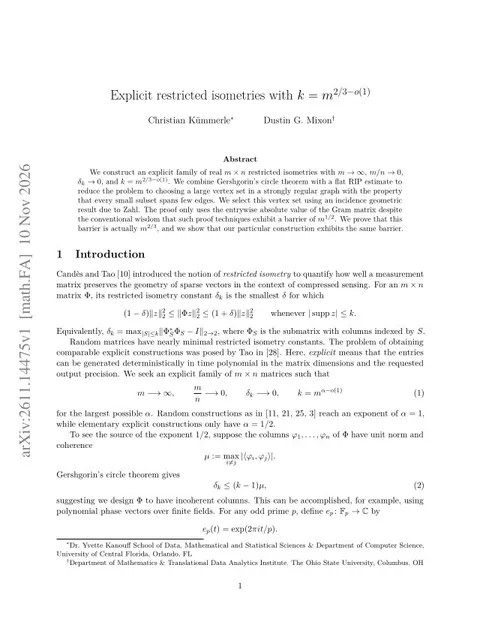

Claude and Codex agents produce complete Lean formalization of restricted isometry paper
The paper, by Christian Kümmerle and Dustin G. Mixon, constructs explicit restricted isometries (measurement matrices for compressed sensing) beyond the square-root barrier believed to limit its proof technique. The agents, directed by the authors, proved every numbered result, including the needed case of Zahl's sphere-tangency theorem, but no running-time bound.

Checked against: ckuemmerle/ExplicitRIPTwoThirdsarXiv:2611.14475paperswithlean.com